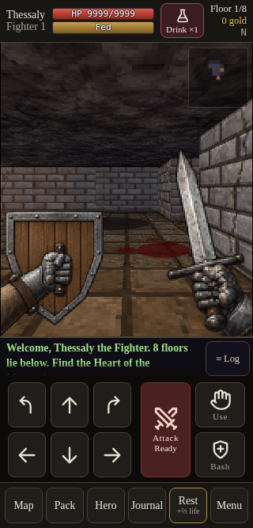
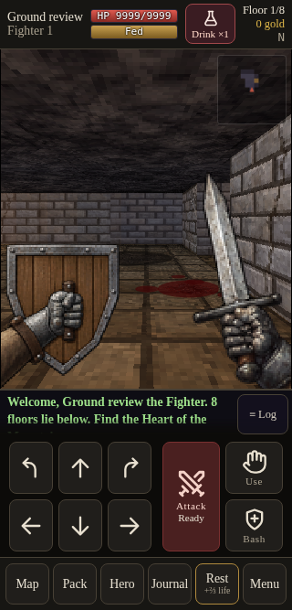
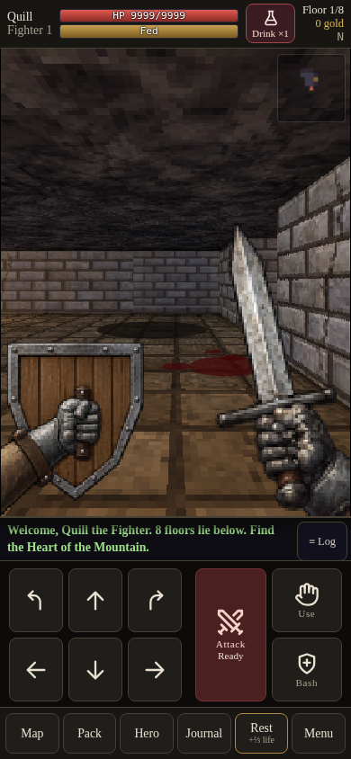
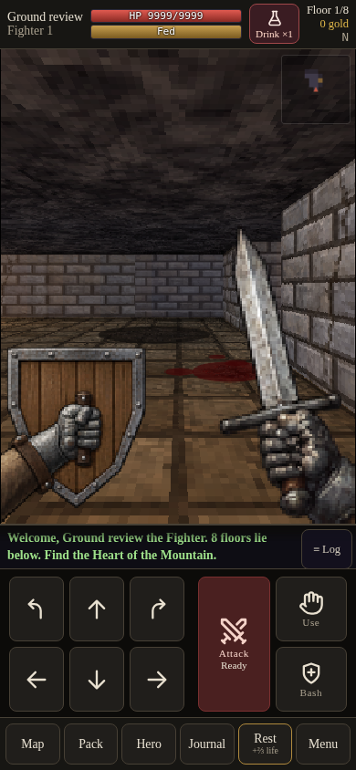
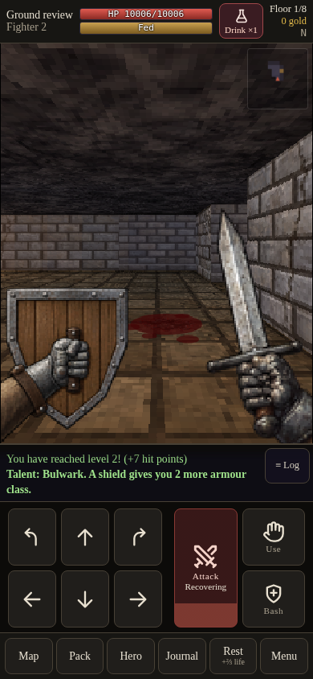
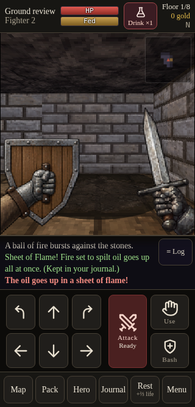

Blood and cold ash
Original floor shapes with painted material detail. Native running renderer; supplied comparison stains and encounter resources are described in the review.
320px comparison
Before
Recovery v0.9.65
390px comparison
Before
Recovery v0.9.65
Actual attack and cold-ash approach
Attack leaves blood
Walk toward the cold ash